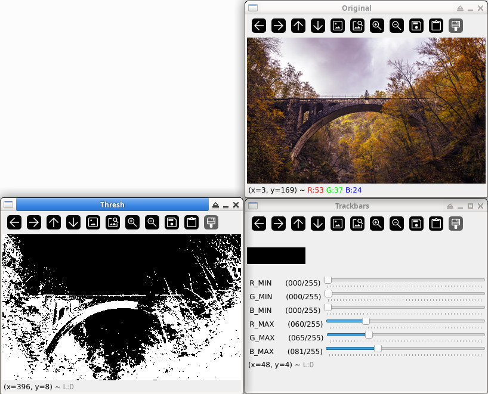

Steward
分享是一種喜悅、更是一種幸福
程式語言 - OpenCV - Python - Range Detector
參考資訊：
https://github.com/PyImageSearch/imutils/blob/master/bin/range-detector
range-detector.py
#!/usr/bin/env python
# -*- coding: utf-8 -*-
# USAGE: You need to specify a filter and "only one" image source
#
# (python) range-detector --filter RGB --image /path/to/image.png
# or
# (python) range-detector --filter HSV --webcam
import cv2
import argparse
from operator import xor
def callback(value):
pass
def setup_trackbars(range_filter):
cv2.namedWindow("Trackbars", 0)
for i in ["MIN", "MAX"]:
v = 0 if i == "MIN" else 255
for j in range_filter:
cv2.createTrackbar("%s_%s" % (j, i), "Trackbars", v, 255, callback)
def get_arguments():
ap = argparse.ArgumentParser()
ap.add_argument('-f', '--filter', required=True,
help='Range filter. RGB or HSV')
ap.add_argument('-i', '--image', required=False,
help='Path to the image')
ap.add_argument('-w', '--webcam', required=False,
help='Use webcam', action='store_true')
ap.add_argument('-p', '--preview', required=False,
help='Show a preview of the image after applying the mask',
action='store_true')
args = vars(ap.parse_args())
if not xor(bool(args['image']), bool(args['webcam'])):
ap.error("Please specify only one image source")
if not args['filter'].upper() in ['RGB', 'HSV']:
ap.error("Please speciy a correct filter.")
return args
def get_trackbar_values(range_filter):
values = []
for i in ["MIN", "MAX"]:
for j in range_filter:
v = cv2.getTrackbarPos("%s_%s" % (j, i), "Trackbars")
values.append(v)
return values
def main():
args = get_arguments()
range_filter = args['filter'].upper()
if args['image']:
image = cv2.imread(args['image'])
if range_filter == 'RGB':
frame_to_thresh = image.copy()
else:
frame_to_thresh = cv2.cvtColor(image, cv2.COLOR_BGR2HSV)
else:
camera = cv2.VideoCapture(0)
setup_trackbars(range_filter)
while True:
if args['webcam']:
ret, image = camera.read()
if not ret:
break
if range_filter == 'RGB':
frame_to_thresh = image.copy()
else:
frame_to_thresh = cv2.cvtColor(image, cv2.COLOR_BGR2HSV)
v1_min, v2_min, v3_min, v1_max, v2_max, v3_max = get_trackbar_values(range_filter)
thresh = cv2.inRange(frame_to_thresh, (v1_min, v2_min, v3_min), (v1_max, v2_max, v3_max))
if args['preview']:
preview = cv2.bitwise_and(image, image, mask=thresh)
cv2.imshow("Preview", preview)
else:
cv2.imshow("Original", image)
cv2.imshow("Thresh", thresh)
if cv2.waitKey(1) & 0xFF is ord('q'):
break
if __name__ == '__main__':
main()
執行
$ python3 ./range-detector.py -f RGB -i bridge.jpg
